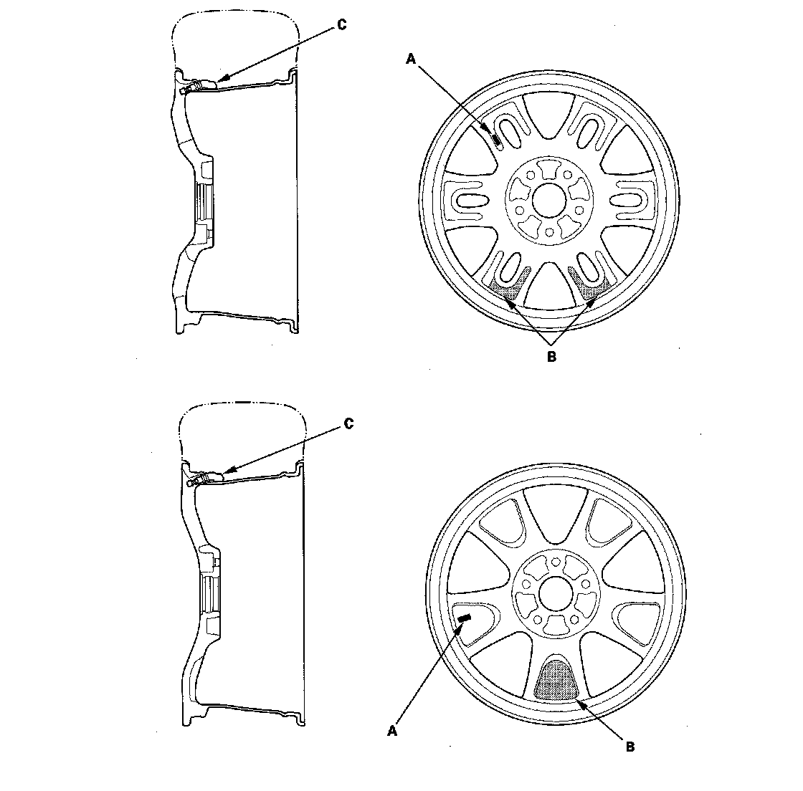

Tire Monitoring System: Description and Operation
System DescriptionTPMS Control Unit Inputs And Outputs 20P Connector (Part 1):
TPMS Control Unit Inputs And Outputs 20P Connector (Part 2):
System Structure
Whenever the engine is running, the TPMS control unit continuously monitors all four tires and the system. If it detects low pressure in a tire, it alerts the driver by turning on the low pressure indicator and the appropriate tire indicator. If it detects a problem in the system, it turns on the TPMS indicator.
Initiators
Mounted on each wheel well, each initiator sends a start/stop signal to the tire pressure sensor in the tire below it.
Control unit
Mounted on the brake pedal bracket, the control unit sends signals to the initiators and receives signals from them to verify pressure sensor IDs every time the engine starts. It also receives signals from the transmitters in the tire pressure sensors, and it continuously monitors and controls the system.
Indicators
All indicators are in the gauge control module: The low pressure indicator (LED indicator) four tire indicators (on the multi-information display) to show which tire is affected, and the TPMS indicator (on the multi-information display) that comes on only if there's a problem with the system. When two or more tire pressures are low, the low pressure indicator comes on about 5 seconds before the appropriate tire indicator. Once low pressure is detected, the system scans all four pressure sensors to ensure that it turns on the correct tire indicator.
Tire pressure sensor
Each sensor is an integrated unit made up of the tire valve stem, a pressure sensor, and a transmitter. The unit is attached to the inside of the wheel, around the valve stem. The sensor transmits the internal tire information to the control unit once every 60 seconds. When the TPMS control unit receives tire pressure of less than 175 kPa (1.8 kgf/cm2, 25 psi) the control unit then turns on the low pressure indicator and the appropriate tire(s) indicator. When that tire's pressure is increased to more than 200 kPa (2.0 kgf/cm2, 29 psi) the transmitter sends tire pressure to the control unit, and then the control unit turns the indicators off.
Wheels
The TPMS will not work unless TPMS type wheels are installed on the vehicle. The original equipment wheels have a "TPMS" stamp (A) on the back of the wheel and counterweights (B) cast into the opposite side of the spoke to balance the weight of the tire pressure sensor (C).
NOTE: The vehicle is equipped with either wheel as shown.

System Communication
- When the vehicle is running, a RF (radio frequency) band wave signal is continuously transmitted from each tire pressure sensor to the control unit.
- When the ignition switch is turned ON (II) the initiators send a LF (low frequency) band wave signal to the tire pressure sensors, switching them from sleep mode to normal function mode. When the ignition switch is turned OFF, the sensors switch from normal function mode back to sleep mode to extend their battery life.
- Each tire pressure sensor has its own ID to prevent jamming by similar systems on other vehicles. After memorizing all the sensor IDs, the control unit receives only those specific signals.
- An ID can be memorized manually or automatically. Each initiator is hardwired to the control unit. Every time the ignition is turned ON (II) the control unit asks each initiator for a sensor ID. The initiators then transmit the sensor IDs, and the control unit receives and memorizes them. The control unit then knows which ID belongs to each tire location. This recurring ID confirmation prevents any confusion in the system as a result of normal tire rotation.
NOTE: Be careful not to bend the brackets on the TPMS control unit and the front initiators. Misalignment of the control unit and initiators could interfere with sending and receiving signals.